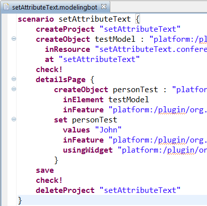
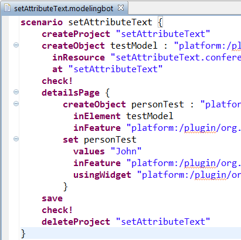

Chapter Significant Scenarios {
This chapter specifies the behavior of the *my.plugin* plugin by listing relevant scenarios.
These scenarios can involve both
human actors or computer/system actors, as defined in chapter 1.5.
SectionComputer Actors{
*As a* end-user
*Given* a _Java class_ containing a non-abstract method
*Then* when getting the model representation of this Java Class
the source of each method should be the exact source of the java method
@M
@ref "org.eclipse.my.plugin.tests/src/org/eclipse/my/plugin/tests/GetJavaMethodSourceTest.java"
M@
}
}

 project to create a textual syntax for our test DSL
project to create a textual syntax for our test DSL 


 http://www.eclipse.org/intent
http://www.eclipse.org/intent
 @Intent_project
@Intent_project